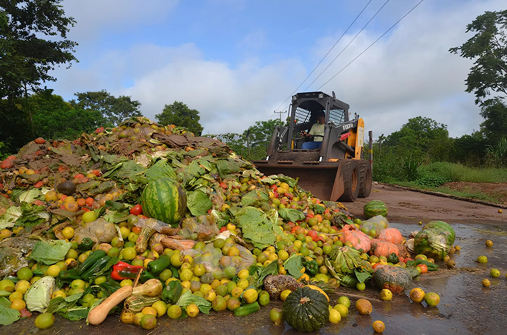

Conectando quem tem a quem precisa
Uma plataforma web que conecta alimentos fora do padrão comercial de grandes empresas a ONGs que combatem a insegurança alimentar.
Uma plataforma web que conecta alimentos fora do padrão comercial de grandes empresas a ONGs que combatem a insegurança alimentar.

Toneladas de alimentos desperdiçadas por ano no mundo (ONU)
Toneladas de comida descartadas anualmente no Brasil (FAO)
De toda a produção mundial de alimentos é perdida ou jogada fora
Das emissões globais de gases estufa vêm do desperdício alimentar
Transformando o descarte em solidariedade.
Evite custos de descarte e envio para aterros. Promova impacto social e melhore a sustentabilidade (ESG) do seu negócio.
Acesse nosso mural integrado em tempo real para visualizar lotes disponíveis e garantir alimentos para sua comunidade.
Um painel intuitivo e rápido.
Varejo e ONGs realizam cadastro para garantir a confiabilidade.
A empresa cadastra o lote de alimentos disponíveis no painel.
ONGs monitoram o mural e reservam os itens necessários.
A ONG retira os insumos no ponto indicado para distribuição.